LECTURE 5 · PART I
Computer Vision
Images, Colour Spaces, Filters & Features
With practical implementation in OpenCV · from pixels to deep learning
Dr. Muhammad Kazim
Department of Intelligent Systems
University of Lahore
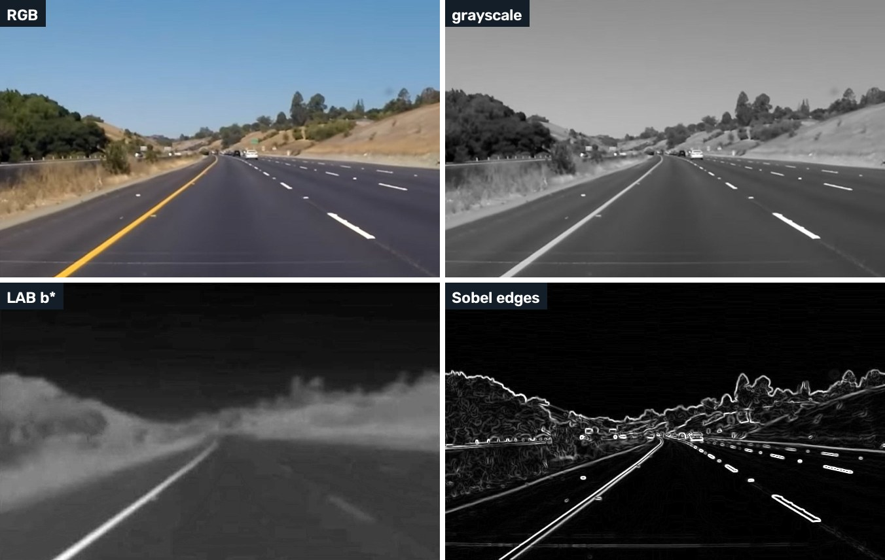
By the end of this lecture you should be able to:
uint8 values 0–255 and H × W × C arrays (tensors).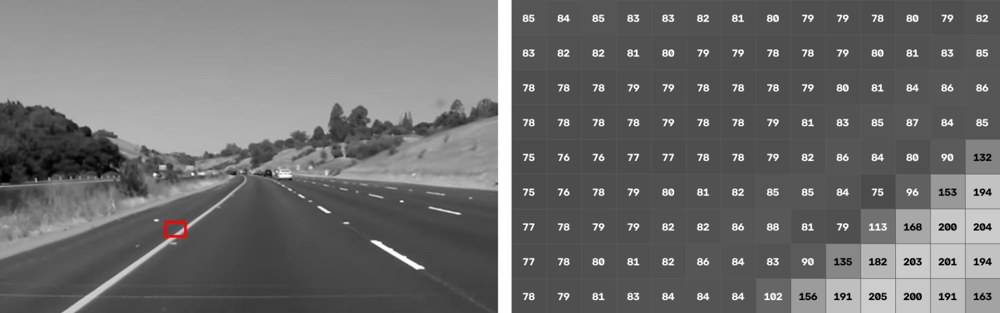
② every pixel is a number
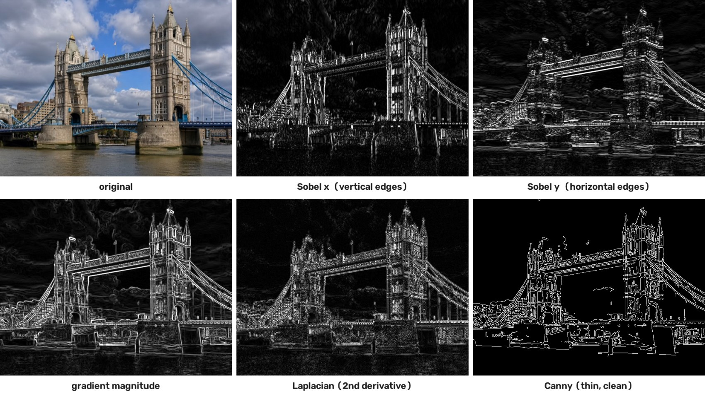
④–⑤ filters reveal edges and shapes
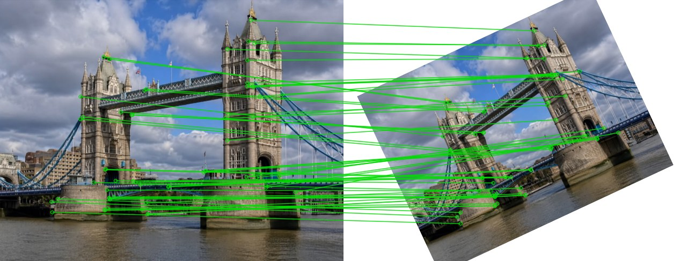
⑥ features find the same object again
01
Human vs computer vision
We see a mountain. What does the computer see?
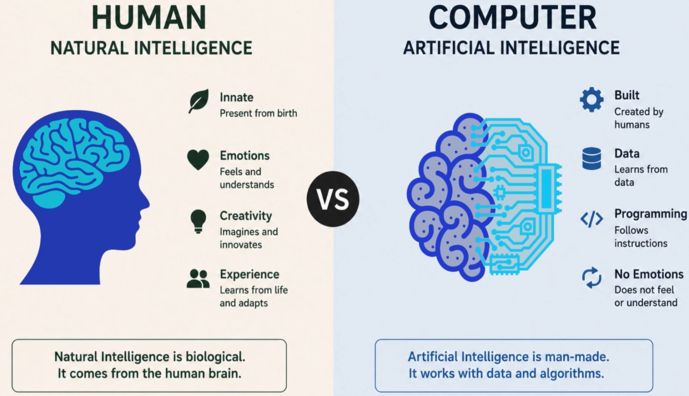
Computer vision is the part of AI that turns pixels into understanding: what is in the image, where it is, and what is happening.
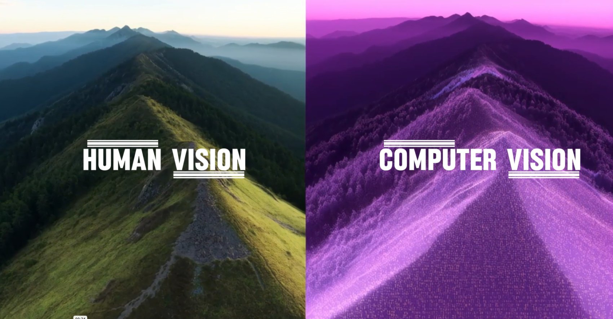
You see a green ridge, mist and mountains — instantly and without effort — your brain has learned to see over a lifetime.
The computer receives only a grid of numbers. Every task — classify, detect, segment, track — starts from those numbers.
02
Images are numbers
Pixels, intensity, colour channels and tensors
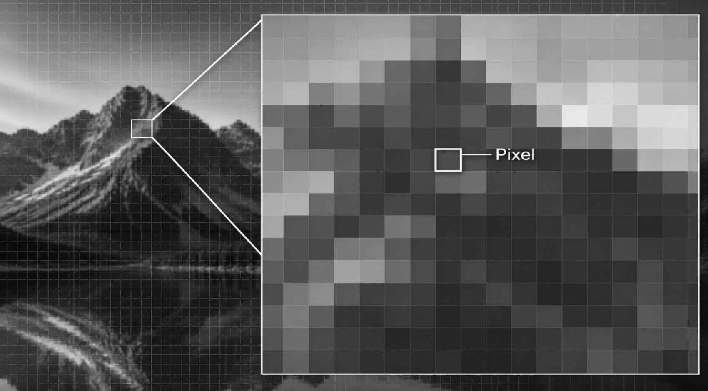
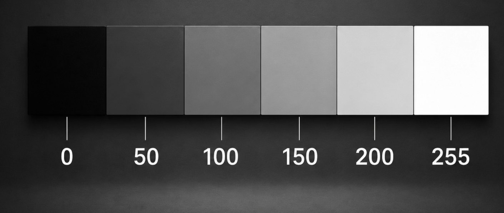
Each pixel uses 8 bits = 28 = 256 levels. 0 = black, 255 = white, everything else is a shade of gray. In NumPy the type is uint8.
uint8 wraps around: np.uint8(250) + 10 → 4. OpenCV saturates instead: cv2.add gives 255. Convert to float32 before doing arithmetic.
import cv2
img = cv2.imread("road.jpg", cv2.IMREAD_GRAYSCALE)
print(img.shape, img.dtype) # (847, 1344) uint8
print(img[606, 452]) # row (y) first, then column (x)
patch = img[606:633:3, 452:494:3]
The red box covers road and lane paint. Road pixels are about 80; the paint jumps to about 200. A sudden jump like this is an edge — that is exactly what the filters in section 4 will find.
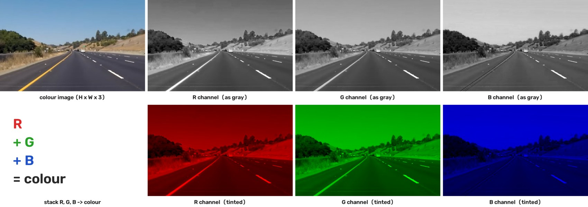
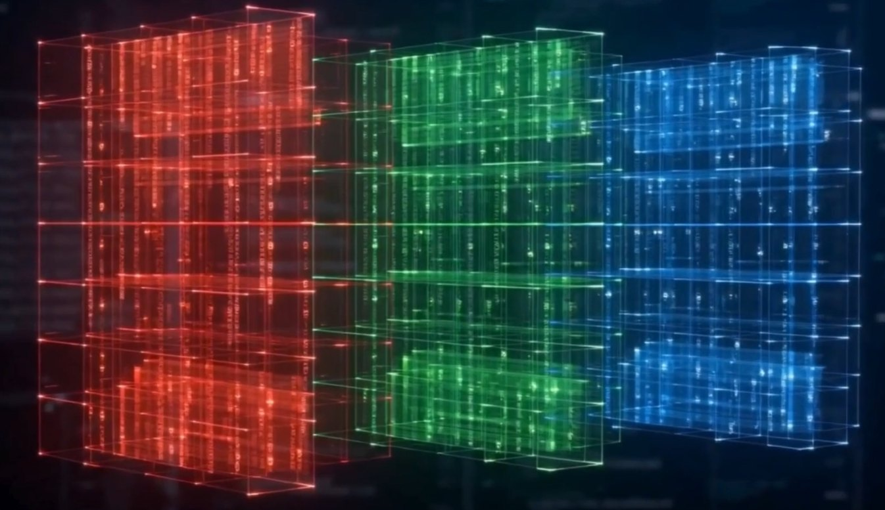
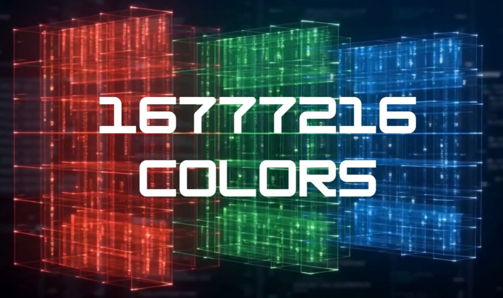
3 channels × 8 bits = 24-bit “true colour”, enough for more shades than the eye can tell apart.
1920 × 1080 × 3 bytes = 6,220,800 bytes ≈ 6.2 MB
Video at 30 fps → ≈ 187 MB every second, uncompressed.
That is why images and video are compressed (JPEG, H.264) — and why compression uses the YCbCr colour space you will meet shortly.
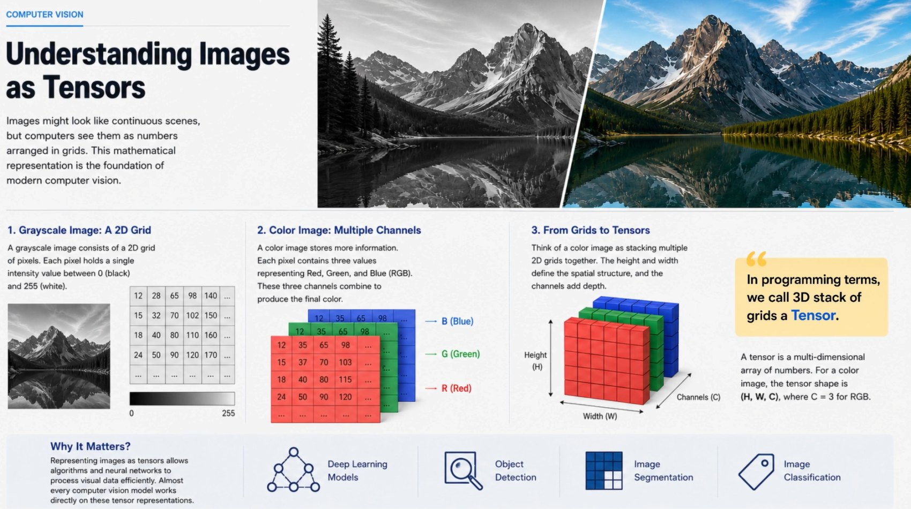
A tensor is an n-dimensional array. Libraries disagree on the order of the axes:
| Library | Shape | Values |
|---|---|---|
| OpenCV / NumPy | (H, W, C), BGR | uint8 0–255 |
| Matplotlib / PIL | (H, W, C), RGB | uint8 |
| PyTorch | (N, C, H, W) | float32 0–1 |
rgb = cv2.cvtColor(img, cv2.COLOR_BGR2RGB)
t = torch.from_numpy(rgb) # (H, W, 3)
t = t.permute(2, 0, 1) / 255. # (3, H, W)
batch = t.unsqueeze(0) # (1, 3, H, W)
Question 1
img.shape returns (480, 640, 3). How wide is the image?
Question 2
How many bytes does one uncompressed 4K RGB frame (3840 × 2160) need?
Question 3
A pixel reads (0, 255, 255) in OpenCV. What colour is it?
03
Colour spaces
One image, many ways to describe its colours
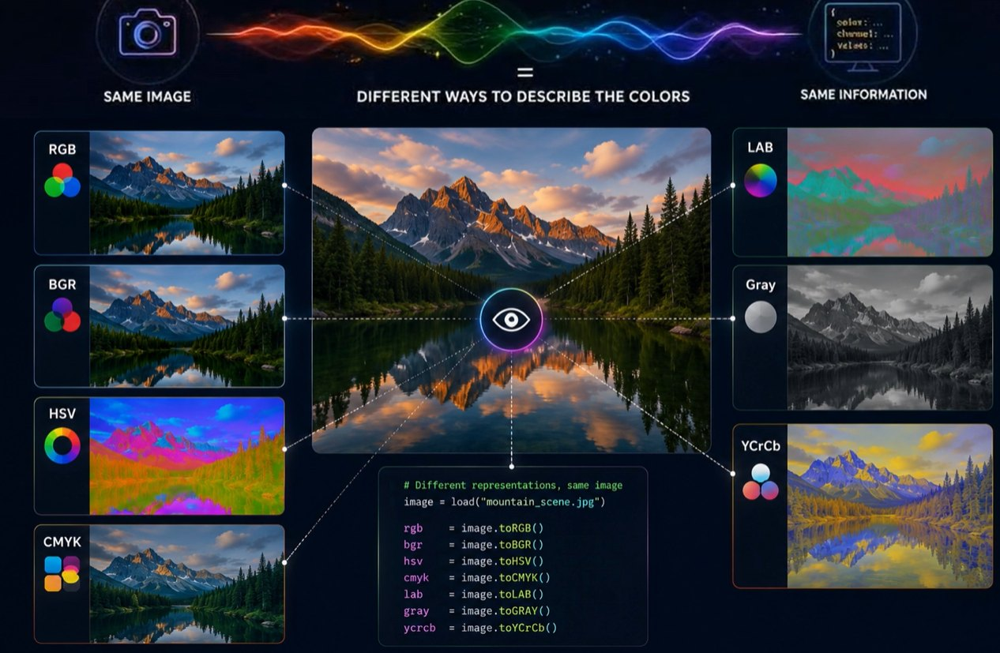
A colour space is a coordinate system for colour. Converting changes the numbers, not the information.
We switch spaces to separate what we care about:
hsv = cv2.cvtColor(img, cv2.COLOR_BGR2HSV)
lab = cv2.cvtColor(img, cv2.COLOR_BGR2LAB)
img = cv2.imread("road.jpg") # B, G, R
plt.imshow(img) # wrong colours
rgb = cv2.cvtColor(img, cv2.COLOR_BGR2RGB)
plt.imshow(rgb) # correct
OpenCV uses BGR for historical reasons: it was the common byte order of camera drivers and Windows bitmaps when the library was written. Everything else (Matplotlib, PIL, PyTorch models) expects RGB. Convert once, at the boundary.
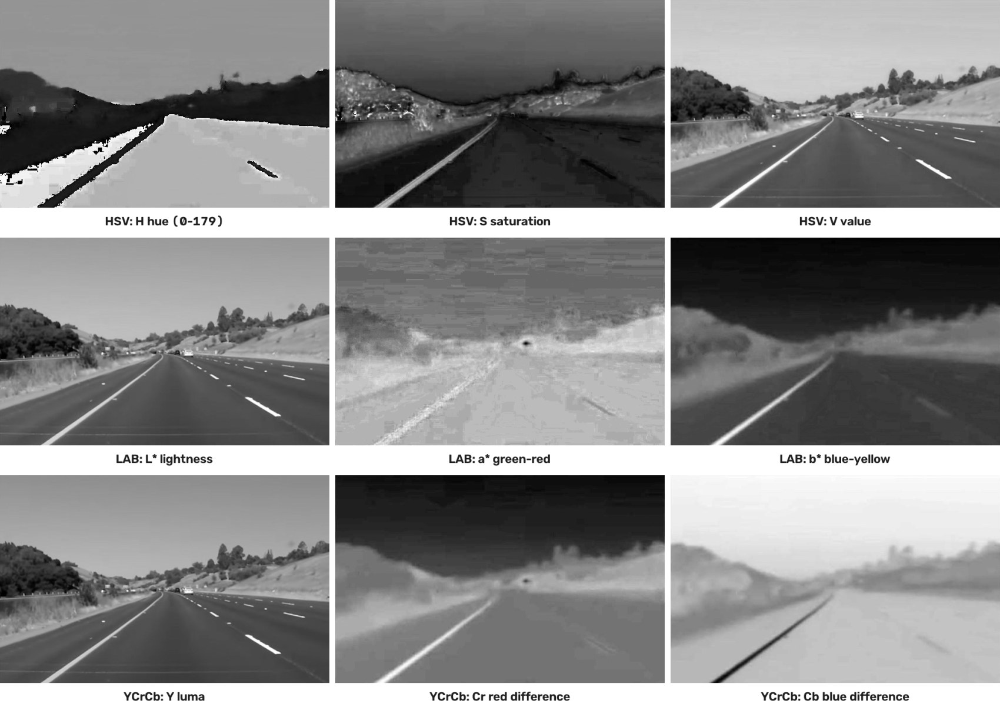
The same road in three colour spaces. Things to notice:
Channels with a small range (H, a*, b*, Cr, Cb) are stretched to 0–255 for display.
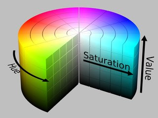
uint8); S and V are 0–255.Why it helps: a yellow line in shadow changes V a lot but H very little, so thresholding H is much more robust than thresholding RGB.
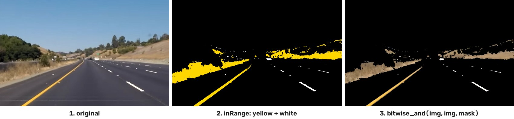
hsv = cv2.cvtColor(img, cv2.COLOR_BGR2HSV)
# bounds are (H, S, V)
yellow = cv2.inRange(hsv, (15, 80, 120), (35, 255, 255))
white = cv2.inRange(hsv, (0, 0, 200), (179, 40, 255))
mask = cv2.bitwise_or(yellow, white)
result = cv2.bitwise_and(img, img, mask=mask)
Look closely: the dry grass is yellow too, so colour alone is not enough. In Part II we add a region-of-interest mask to keep only the road.
Live demo
Selected: – of the pixels. H uses OpenCV’s 0–179 scale.
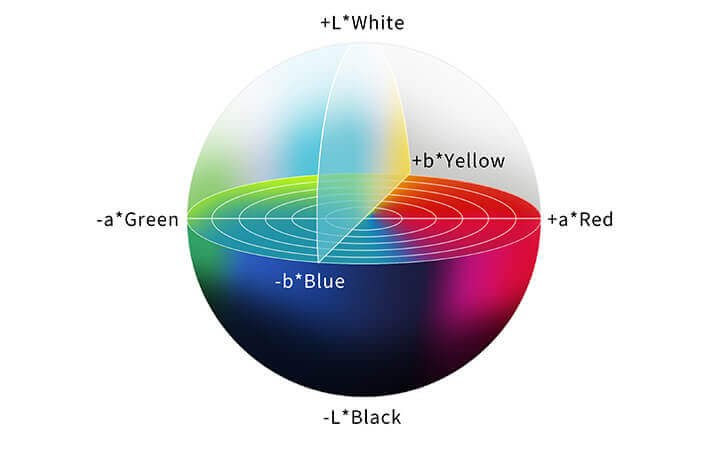
Perceptually uniform: the same distance in LAB looks like the same colour difference to a person (ΔE). Used for colour matching, printing quality checks and robust segmentation.
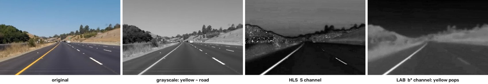
Yellow paint ends up a similar gray to the road: low contrast, easy to miss in shadow.
Saturated paint is bright, gray asphalt is dark — but the grass is bright too.
Yellow is large positive b*: the line pops out and the sky turns dark.
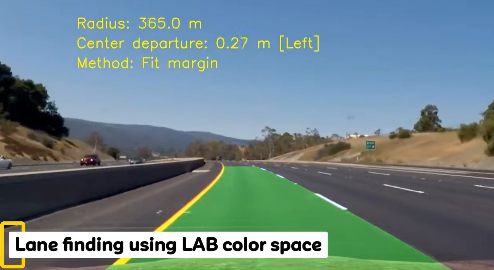
An advanced lane finder thresholds the LAB b* channel for yellow paint and the L* channel for white paint, fits curves to the lane pixels, and reports:
In Part II you build the simpler version step by step: colour selection → region mask → Canny → Hough lines.
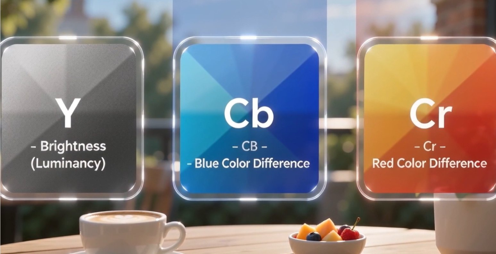
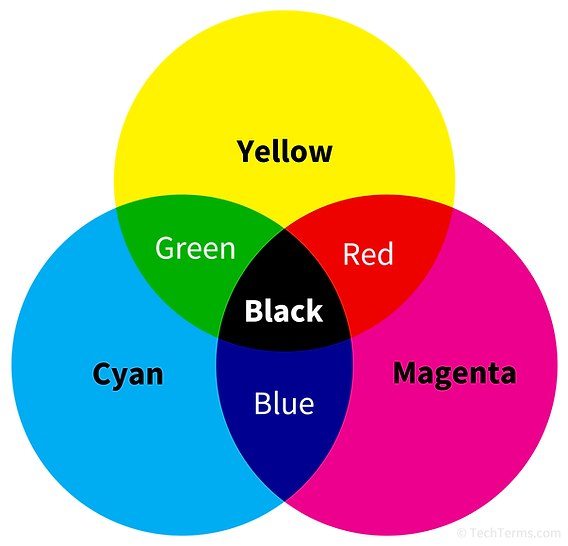
CMYK is a printing space. OpenCV has no CMYK conversion and you will rarely use it in a vision pipeline — but you should recognise it.
| Space | Channels | Good for | OpenCV |
|---|---|---|---|
| RGB / BGR | red, green, blue | display, storage, deep-learning input | cv2.COLOR_BGR2RGB |
| Gray | intensity | edges, features, speed (1 channel instead of 3) | cv2.COLOR_BGR2GRAY |
| HSV / HLS | hue, saturation, value / lightness | colour thresholding, robust to shadows | cv2.COLOR_BGR2HSV · HLS |
| LAB | lightness, green–red, blue–yellow | perceptual colour difference, yellow/blue separation | cv2.COLOR_BGR2LAB |
| YCbCr | luma, blue diff., red diff. | compression (JPEG, video), skin detection | cv2.COLOR_BGR2YCrCb |
| CMYK | cyan, magenta, yellow, key | printing only | — |
Question 1
Why is OpenCV’s hue range 0–179 and not 0–359?
Question 2
You must find a yellow line that is partly in shadow. Which channels would you try?
Question 3
Why does JPEG convert images to YCbCr before compressing?
04 · Lecture 5 · Part I · Image processing
Slide a small kernel over every pixel and replace it with a weighted sum of its neighbours. Same image, different kernel, very different result.
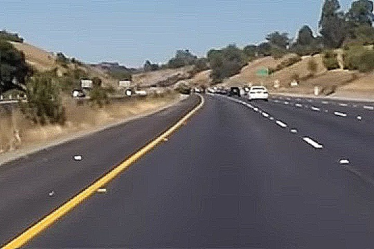
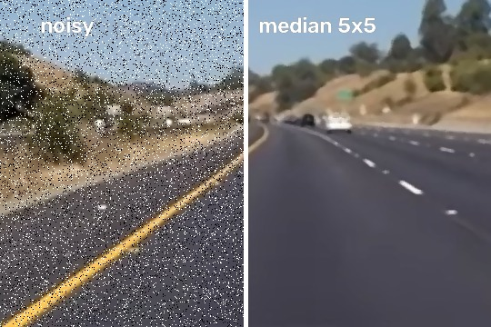
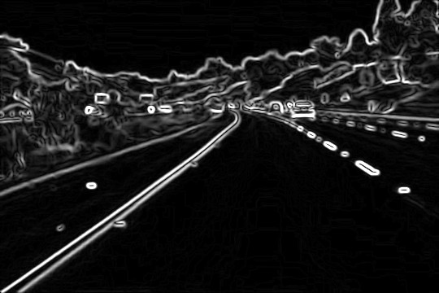
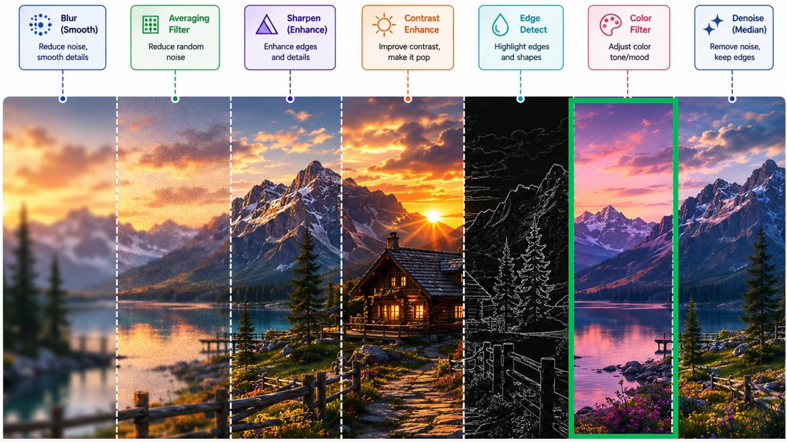
Neighbourhood filters (this lecture) look at a pixel and its neighbours: blur, sharpen, edges, median.
Point operations look at one pixel at a time: contrast, brightness, colour tone (Lecture 3).
input image f
kernel w (box, ÷ 9)
output g
(8 × 10 + 100) ÷ 9 = 180 ÷ 9 = 20. The bright spike is spread out and dimmed: that is blurring.
\[ g(x,y) = \sum_{i=-k}^{k}\sum_{j=-k}^{k} w(i,j)\, f(x+i,\, y+j) \]
Strictly, this is correlation; convolution flips the kernel first. For symmetric kernels they are identical. At the borders OpenCV reflects the image (BORDER_REFLECT_101).
k = np.ones((3, 3), np.float32) / 9
out = cv2.filter2D(img, -1, k) # any kernel
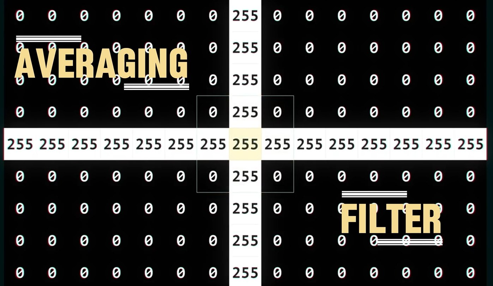
① a white cross (255) on black (0); 3 × 3 window on the centre
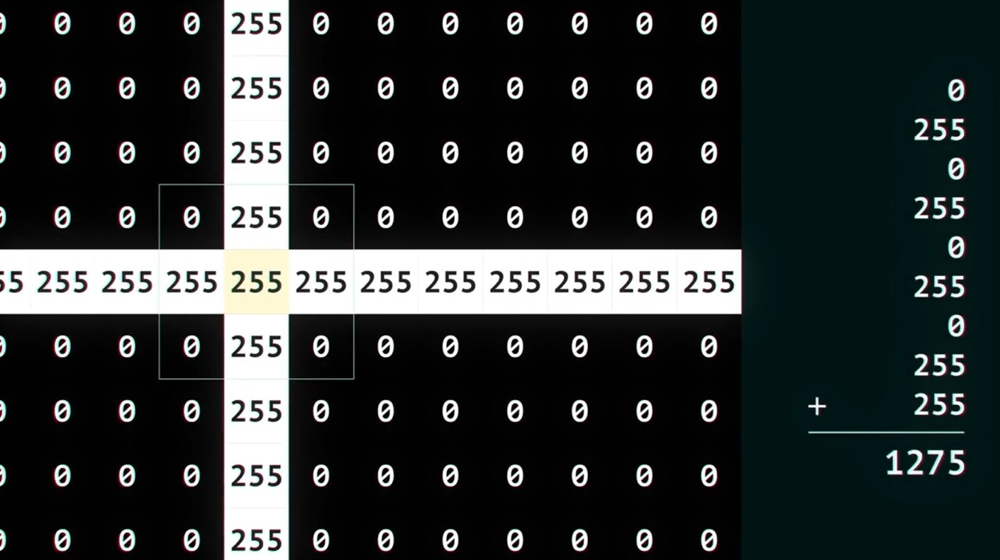
② add the 9 values: 5 × 255 = 1275
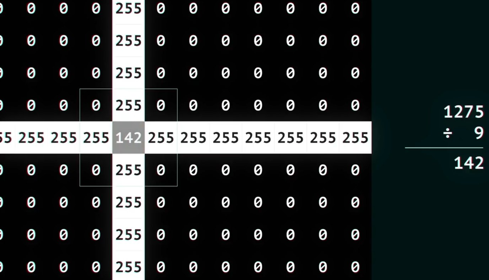
③ divide by 9: 1275 ÷ 9 = 141.7 → 142
The centre drops from 255 to 142, and the black pixels next to the line become gray. Repeat everywhere: the sharp cross becomes a soft, wider blur. Averaging removes noise — but also detail.
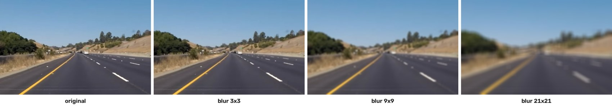
for k in (3, 9, 21):
out = cv2.blur(img, (k, k)) # k x k box filter
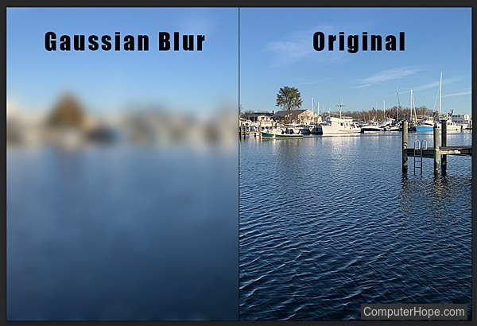
Instead of equal weights, use a bell curve:
\[ G(x,y) = \frac{1}{2\pi\sigma^2}\, e^{-\frac{x^2+y^2}{2\sigma^2}} \]
3 × 3 Gaussian kernel, ÷ 16.
Centre weight 4, corners 1.
out = cv2.GaussianBlur(img, (5, 5), 0) # sigma 0 → from size
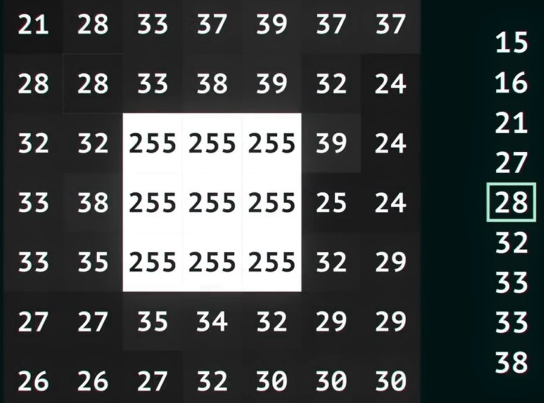
out = cv2.medianBlur(img, 5) # kernel size must be odd
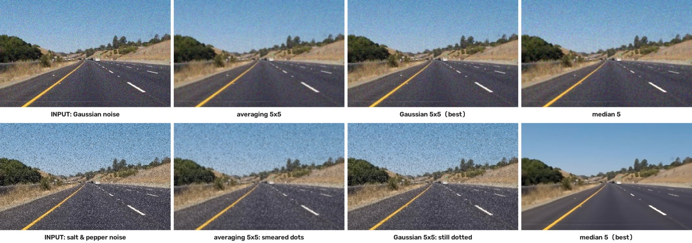
Gaussian noise (every pixel a bit off) → Gaussian blur averages it away.
Salt & pepper (a few pixels completely wrong) → median ignores the outliers.
Live demo
Left: input · right: output. Edit any number and the output updates. Try: what happens if the weights do not add up to the divisor?
A 3 × 3 neighbourhood:
The centre 250 is a noise speck.
Quiz question
05
Edges, shapes & contours
From brightness changes to object outlines
Remember the lane-line patch: 81, 79, 113, 168, 200. Edges are where the image changes fast — the derivative (gradient) is large.
Sobel x — finds vertical edges
Sobel y — finds horizontal edges
\[ |\nabla f| = \sqrt{G_x^2 + G_y^2}, \qquad \theta = \arctan\frac{G_y}{G_x} \]
gray = cv2.cvtColor(img, cv2.COLOR_BGR2GRAY)
gray = cv2.GaussianBlur(gray, (3, 3), 0)
sx = cv2.Sobel(gray, cv2.CV_64F, 1, 0, ksize=3)
sy = cv2.Sobel(gray, cv2.CV_64F, 0, 1, ksize=3)
mag = cv2.magnitude(sx, sy)
lap = cv2.Laplacian(gray, cv2.CV_64F)
can = cv2.Canny(gray, 80, 180)
Use CV_64F, not uint8: a dark→bright edge is positive and bright→dark is negative; uint8 would clip it to 0 and lose half of the edges.
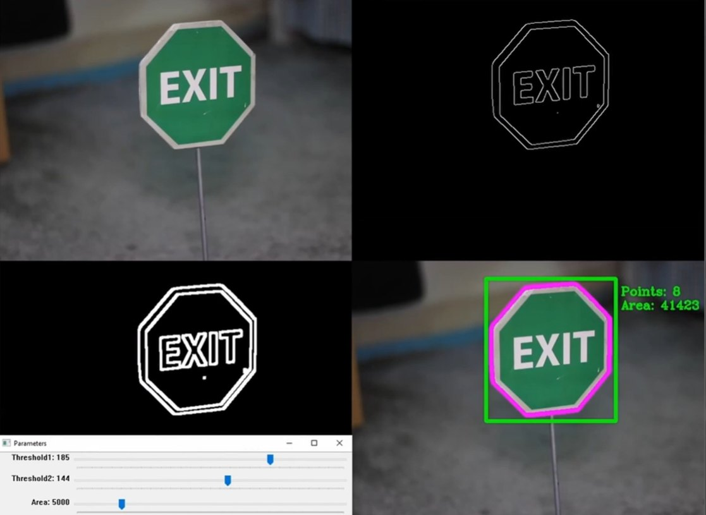
The classic shape pipeline:
The EXIT sign has 8 corners → octagon. The trackbars set the two Canny thresholds and the minimum area.
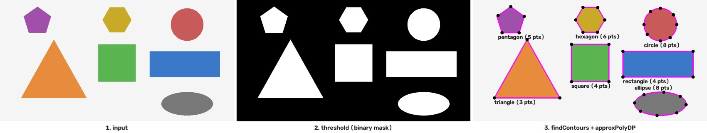
gray = cv2.cvtColor(img, cv2.COLOR_BGR2GRAY)
_, mask = cv2.threshold(gray, 200, 255, cv2.THRESH_BINARY_INV)
cnts, _ = cv2.findContours(mask, cv2.RETR_EXTERNAL,
cv2.CHAIN_APPROX_SIMPLE)
for c in cnts:
peri = cv2.arcLength(c, True)
approx = cv2.approxPolyDP(c, 0.02 * peri, True)
corners = len(approx) # 3 triangle, 4 square/rect, ...
x, y, w, h = cv2.boundingRect(approx)
A contour is the list of boundary points of a white region in a binary mask.
approxPolyDP simplifies the outline to a polygon; ε = 2% of the perimeter.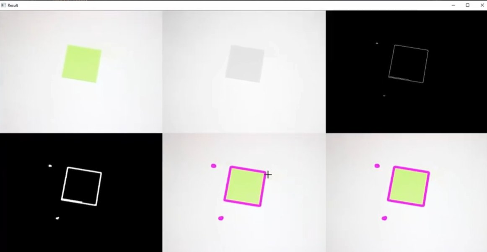
Top row → bottom row:
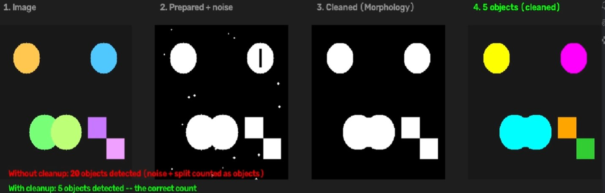
k = cv2.getStructuringElement(cv2.MORPH_ELLIPSE, (5, 5))
mask = cv2.morphologyEx(mask, cv2.MORPH_OPEN, k) # remove specks
mask = cv2.morphologyEx(mask, cv2.MORPH_CLOSE, k) # fill holes
n = len(cv2.findContours(mask, cv2.RETR_EXTERNAL,
cv2.CHAIN_APPROX_SIMPLE)[0])
Without cleanup: 20 “objects” — every speck of noise and every split piece count as separate objects.
With morphology: 5 objects, the correct count. Opening removes specks; closing fills small holes.
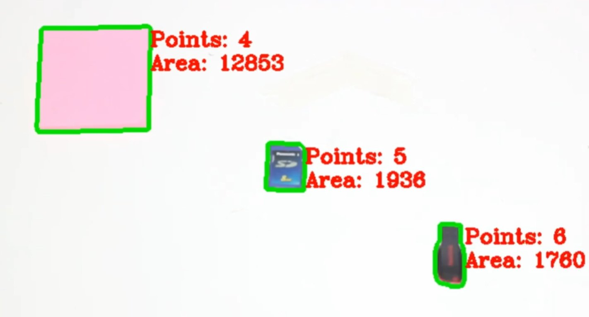
for c in cnts:
area = cv2.contourArea(c)
if area < 1000: # ignore noise
continue
peri = cv2.arcLength(c, True)
approx = cv2.approxPolyDP(c, 0.02 * peri, True)
cv2.drawContours(img, [c], -1, (0, 255, 0), 3)
txt = f"Points: {len(approx)} Area: {int(area)}"
cv2.putText(img, txt, (x, y), font, 1, red, 2)
Area and corner count are simple features: numbers that describe an object. They work for clean shapes — but can they tell two different logos apart? →
Question 1
Why do we usually blur before detecting edges?
Question 2
How many points should approxPolyDP return for a STOP sign?
Question 3
Your object counter reports 37 objects for 5 coins. What is the most likely fix?
06
Feature extraction
When shapes are not enough
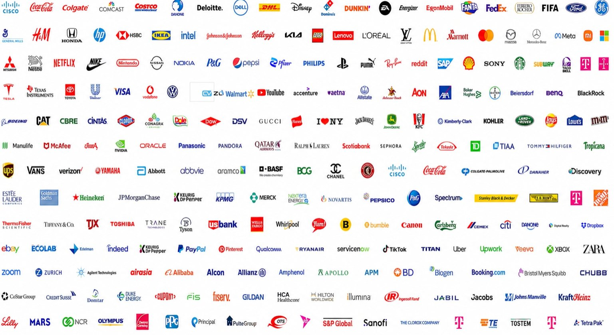
Hundreds of logos — most are circles, rectangles or words.
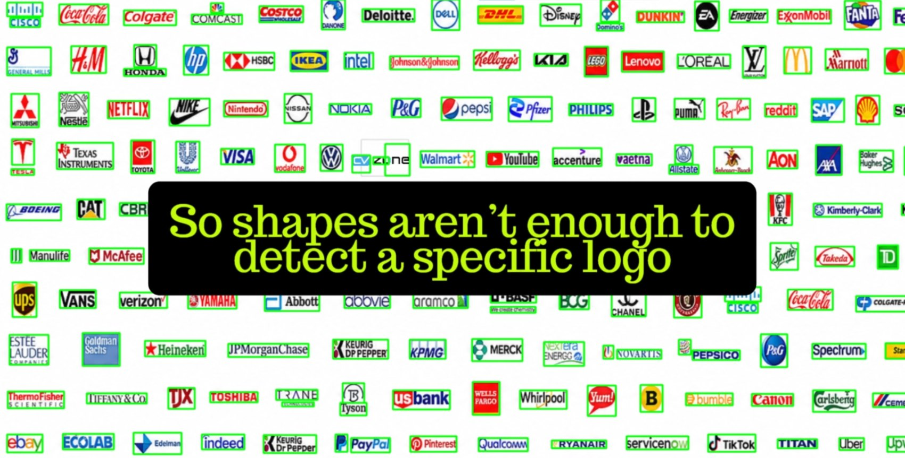
A shape detector boxes every logo — it cannot say which one is which.
To recognise one particular object we need distinctive local patterns — corners, textures, letter shapes — that appear on that object and nowhere else. These are features.
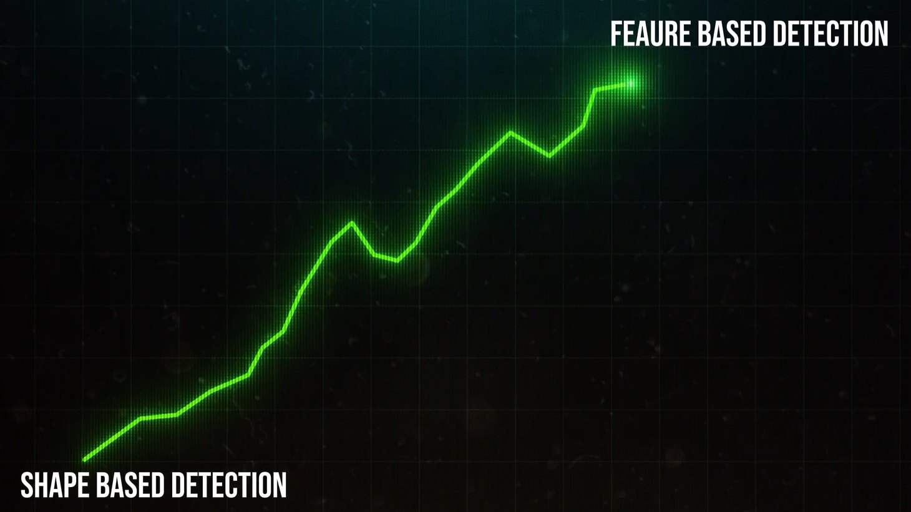
| Shape-based | Feature-based | |
|---|---|---|
| Looks at | outline, corners, area | many small, distinctive patches |
| Finds | “a square”, “an octagon” | “this logo”, “this face” |
| Rotation / scale | fragile | robust (with the right descriptor) |
| Occlusion | fails if the outline breaks | works with some features hidden |
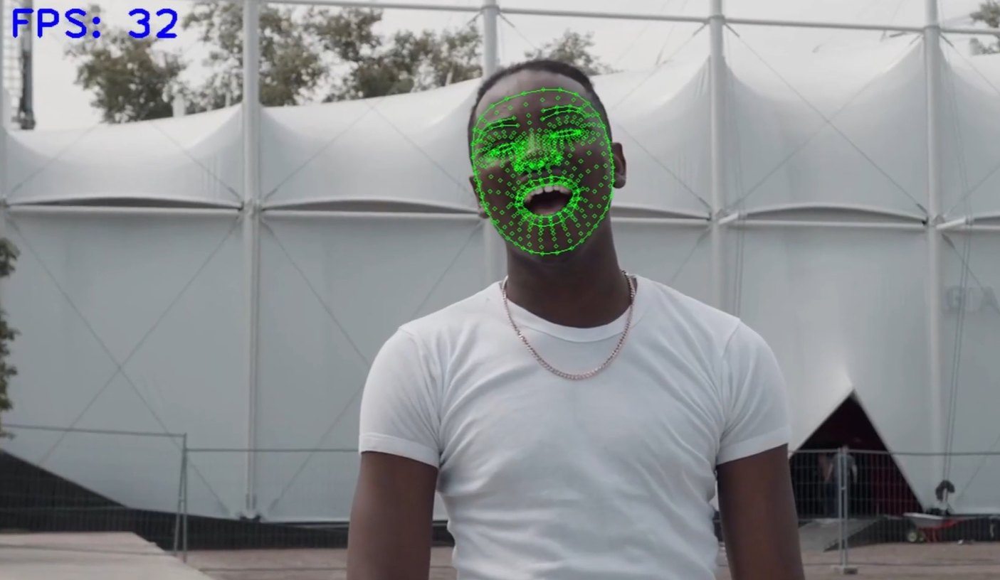
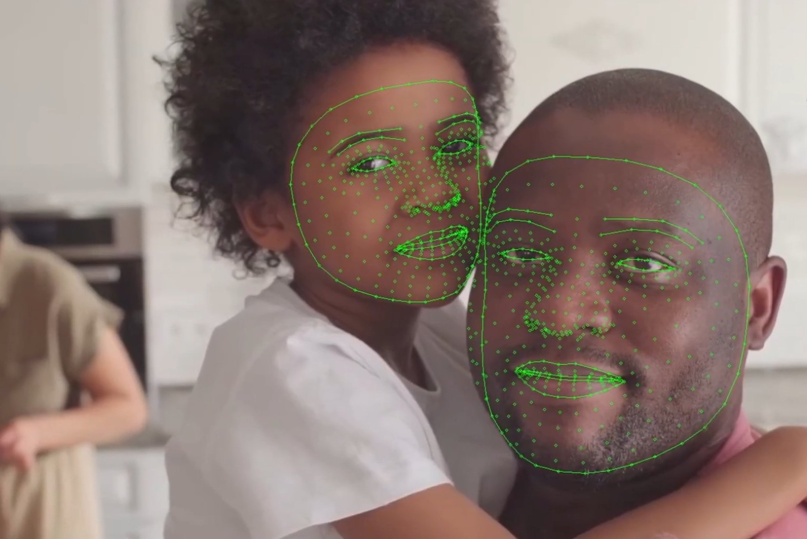
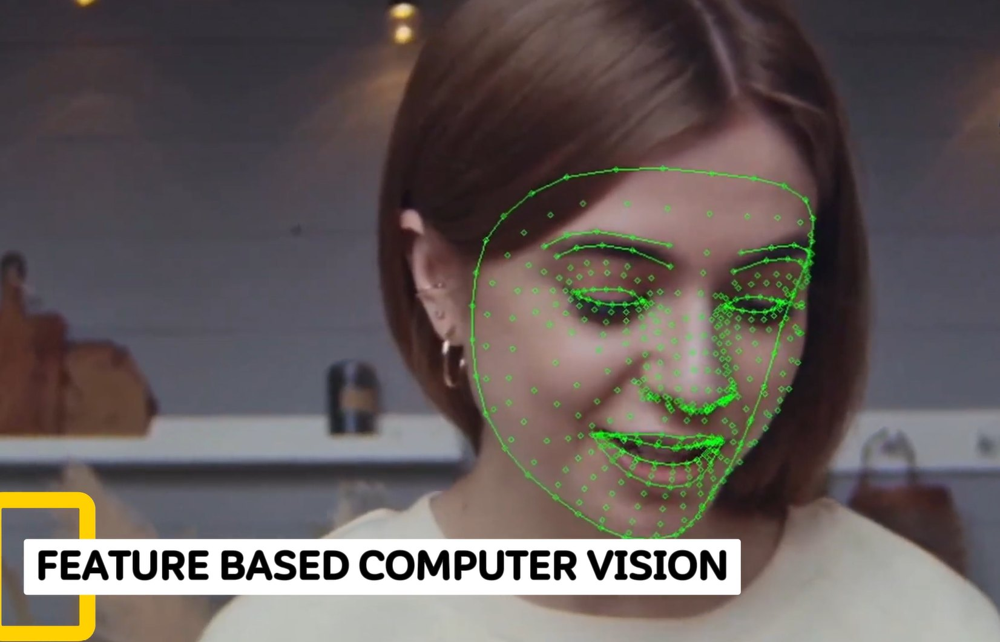
Hundreds of landmarks — eye corners, lip contours, nose, jaw line — are found and tracked in real time (here at 32 fps). They work across poses, expressions, ages and skin tones, and drive face filters, driver-drowsiness alerts and avatar animation.
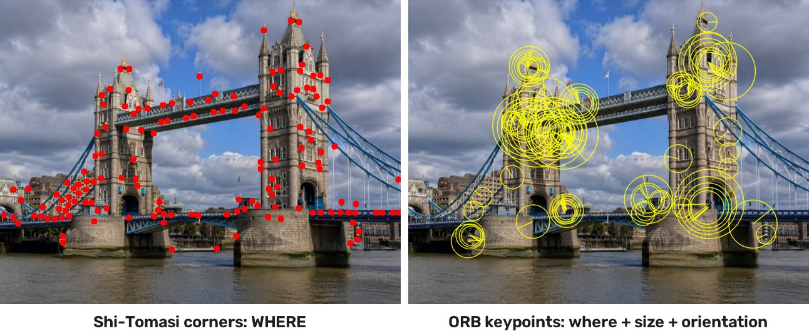
A point that can be found again: corners are good, edges are ambiguous, flat areas are useless. ORB also stores a size and an orientation.
A vector that summarises the patch around the keypoint. ORB uses 256 bits; SIFT uses 128 numbers.
repeatable, distinctive, and invariant to rotation, scale and lighting.
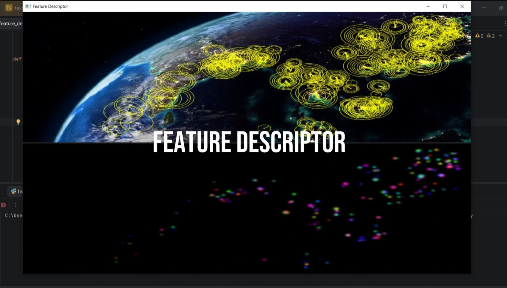
Each yellow circle is a keypoint; its size is the scale at which it was found. Below, every keypoint becomes a descriptor — a point in a high-dimensional space.
Classic detectors and descriptors:
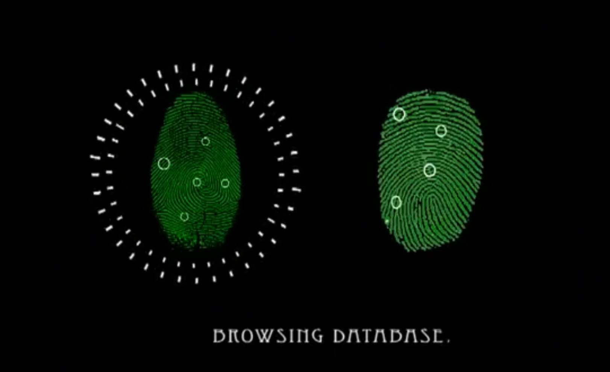
① find distinctive points (minutiae)
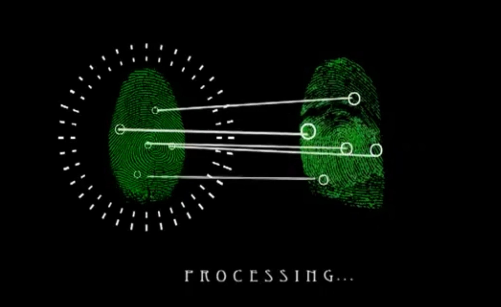
② compare their descriptions with the database
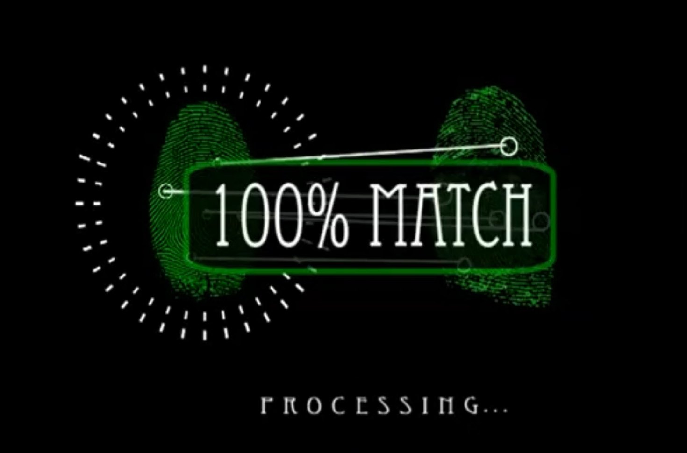
③ enough consistent matches → same finger
Image matching does the same: compare descriptors, keep the nearest neighbours, and check that the matches agree on one geometric transformation.
orb = cv2.ORB_create(1500)
k1, d1 = orb.detectAndCompute(gray1, None)
k2, d2 = orb.detectAndCompute(gray2, None)
bf = cv2.BFMatcher(cv2.NORM_HAMMING)
good = [m for m, n in bf.knnMatch(d1, d2, k=2)
if m.distance < 0.75 * n.distance] # ratio test
H, inl = cv2.findHomography(pts1, pts2, cv2.RANSAC, 5.0)
The right image is rotated 25° and scaled to 75%. Still:
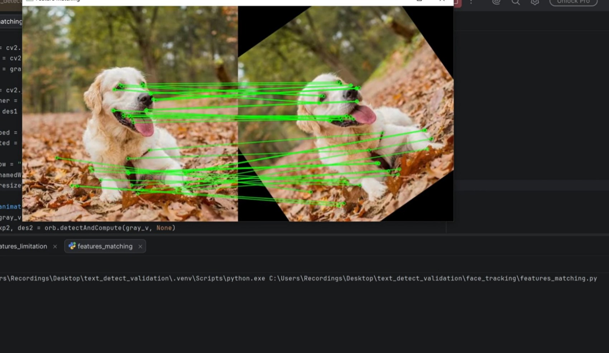
The same ORB pipeline on a photo and a rotated copy of it. Most green lines connect the same point on the dog — the ear, the eye, the nose.
A few lines cross the image: these are wrong matches (outliers). That is why we use the ratio test and RANSAC.
Applications: panorama stitching, visual odometry and SLAM, augmented reality, object instance recognition.
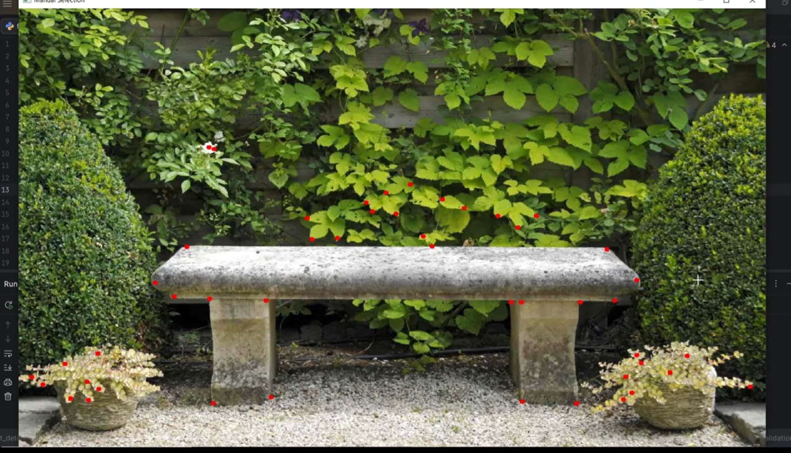
Hand-crafted: a corner detector designed by people finds bench corners and leaf tips.
Learned: a pretrained CNN’s feature map — the network decided for itself which patterns matter.
Hand-crafted features (Harris, SIFT, ORB) follow rules we wrote. Deep networks learn their features from millions of examples — which brings us to the last section.
Question 1
Why is a corner a better keypoint than a point on a straight edge?
Question 2
What is the difference between a keypoint and a descriptor?
Question 3
Why do we use NORM_HAMMING to match ORB descriptors?
07
Deep-learning-based computer vision
Let the machine learn the features
A person chooses the colour space, the thresholds, the kernels and the features. Everything in sections 2–6 of this lecture.
We provide labelled examples; the network learns its own kernels and features by trial and error.
Machine learning is the “field of study that gives computers the ability to learn without being explicitly programmed” (definition often attributed to Arthur Samuel, 1959). For vision, the program is replaced by a dataset: thousands of images of cars, dogs, bicycles, STOP signs and faces, each with its label.
After training: “CAT (correct!)”
A convolutional network (CNN) learns 3 × 3 kernels just like the ones in section 4. Its first layer typically ends up with Sobel-like edge detectors and blob detectors — learned, not designed.
split the image into patches; each patch is a block of numbers
8 × 8 grid → 64 patches
Transformers were built for words. ViT (Dosovitskiy et al., 2021, “An Image is Worth 16×16 Words”) treats each image patch as a word: flatten it, map it to a vector (a token), add its position, and let self-attention relate every patch to every other patch.
every patch = R, G, B numbers (section 2 again)
each patch → one embedding vector (token)
In section 4 we removed noise. Generative models (diffusion models with transformer backbones) learn to do this so well that they can start from pure noise and remove it step by step, until an image appears that matches a text prompt.
| Classical (sections 2–6) | Deep learning (section 7) | |
|---|---|---|
| Features | designed by people: colour thresholds, kernels, ORB | learned from data |
| Data needed | a few images to tune parameters | thousands to millions of labelled images |
| Compute | tiny — runs on a microcontroller | a GPU to train; often an accelerator to run |
| Explainable? | yes — every step can be inspected | harder — feature maps, attention maps |
| Robustness | breaks when conditions change (light, weather) | generalises well if the training data is diverse |
| Today | pre-processing, measurement, embedded systems | classification, detection, segmentation, generation |
Real systems use both: classical pre-processing (colour conversion, resizing, normalisation) feeds every deep network.
H × W × C arrays of uint8 0–255. OpenCV uses BGR.
Same information, different axes. HSV/LAB separate colour from brightness.
A kernel slides over every pixel. Gaussian for Gaussian noise, median for salt & pepper.
Edges = large gradients. Contours + approxPolyDP count corners.
Keypoint (where) + descriptor (what). Match with ratio test + RANSAC.
Networks learn the kernels and features themselves. ViT turns patches into tokens.
img = cv2.imread("img.jpg") # BGR
rgb = cv2.cvtColor(img, cv2.COLOR_BGR2RGB)
gray = cv2.cvtColor(img, cv2.COLOR_BGR2GRAY)
hsv = cv2.cvtColor(img, cv2.COLOR_BGR2HSV)
mask = cv2.inRange(hsv, lower, upper)
out = cv2.bitwise_and(img, img, mask=mask)
box = cv2.blur(img, (5, 5))
gaus = cv2.GaussianBlur(img, (5, 5), 0)
med = cv2.medianBlur(img, 5)
any_ = cv2.filter2D(img, -1, kernel)
sx = cv2.Sobel(gray, cv2.CV_64F, 1, 0, ksize=3)
lap = cv2.Laplacian(gray, cv2.CV_64F)
edge = cv2.Canny(gray, 50, 150)
k = cv2.getStructuringElement(cv2.MORPH_ELLIPSE, (5, 5))
mask = cv2.morphologyEx(mask, cv2.MORPH_OPEN, k)
cnts, _ = cv2.findContours(mask, cv2.RETR_EXTERNAL,
cv2.CHAIN_APPROX_SIMPLE)
peri = cv2.arcLength(c, True)
approx = cv2.approxPolyDP(c, 0.02 * peri, True)
orb = cv2.ORB_create()
kp, des = orb.detectAndCompute(gray, None)
Your turn: take a photo of objects on your desk, count them with threshold → morphology → contours, then match one object between two photos with ORB.
Questions?
Intelligent Vision Systems; University of Lahore | Dr. Muhammad Kazim